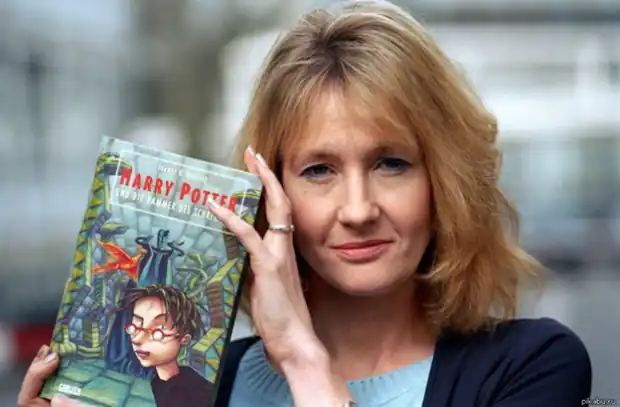
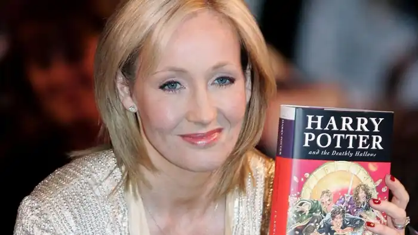
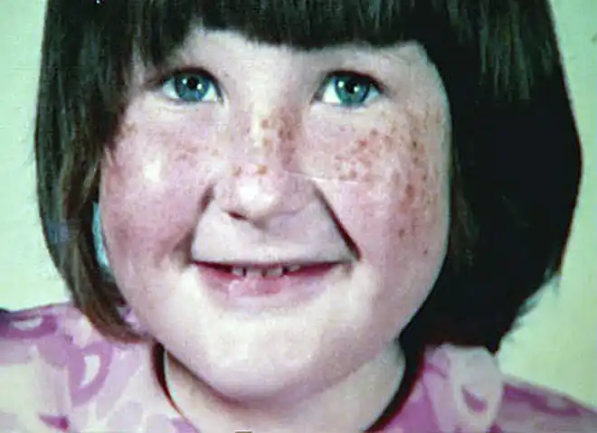

Історія Джоан Роулінг у багатьох відношеннях нітрохи не менш чарівна, ніж історія створеного її фантазією юного чарівника. Довга смуга невдач, серія відмов від різних видавництв – все це не завадило Роулінг перетворитися в одну з найвідоміших і найбагатших жінок світу за порівняно невеликий проміжок часу.
Народилася Роулінг у Йете, Глостершир, Англія (Yate, Gloucestershire, England). Писати казкові історії вона почала ще дитиною; першим слухачем юної Джоан була її сестра. У 9 років, стараннями своєї бабусі, Джоан познайомилася з автобіографією Джесіки Митфорд (Jessica Mitford); після цього Митфорд стала для дівчинки кумиром і зразком для наслідування.
Дитинство, на жаль, у Роулінг видався нелегким. Мати дівчинки багато хворіла, а з батьком стосунки у неї відверто не складалися. Особливо на тлі ровесниць якимись здібностями Джоан не виділялася, однак з навчанням справлялася відмінно, та й читала дуже і дуже багато. У 1982-му Роулінг спробувала вступити в Оксфорд, однак не впоралася з іспитами; диплом бакалавра вона отримала в Ексетерському Університеті. Навчання в університеті пішла на користь майбутньої письменниці з точки зору соціалізації – вона обзавелася безліччю нових друзів, що на самооцінці її позначилося глибоко позитивним чином. Після закінчення університету Роулінг перебралася до Лондона, де деякий час працювала на проект ‘Amnesty International'. Згодом Джоан разом зі своїм коханим вирішила переїхати в Манчестер (Manchester). Саме під час поїздки на поїзді з Манчестера в Лондон Джоан і прийшла в голову ідея історії про хлопчика, відвідувати школу для чарівників; сталося це в 1990-м. Втілювати задум у життя Роулінг почала при першій же можливості. Незабаром сталася ще одна подія, яка сильно вплинула на сам дух книги – мати Роулінг померла після 10 років боротьби з розсіяним склерозом. Деякий час Роулінг пропрацював в Португалії, навчаючи місцевих англійської; трудилася вона ночами, вдень працюючи над книгою. Тут же Джоан познайомилася з тележурналістом Хорхе Арантесом (Jorge Arantes); 16 жовтня 1992-го вони одружилися, а 27 липня 1993-го у Роулінг народилася дочка Марія. 17 листопада 1993-го, всього через 13 місяців і 1 день шлюбу Роулінг і Арантес розлучилися. Судячи за непрямими даними, чоловік звертався з Джоан досить грубо, хоча точних деталей до нас не доходило. Після розлучення Роулінг відчувала себе абсолютної невдахою; письменниця страждала від клінічної депресії і навіть подумувала про самогубство. Пізніше переживання того періоду вилилися в образи дементоров, моторошних пожирачів душ і вартою магічних в'язниць. Роботу над першою книгою про Гаррі Поттера Роулінг закінчила в 1995-м. Рукопис побувала в 12 видавництвах – і всі 12 відповіли Роулінг відмовою. На контакт з письменницею пішли лише ‘Bloomsbury'; за чутками, чималу роль в цьому зіграла 8-річна дочка голови компанії, з великим задоволенням прочитала першу главу книги і яка вимагала продовження. Втім, навіть тут Роулінг порадили знайти ‘нормальну роботу', пославшись на слабкі шанси як слід заробити на дитячій літературі. Роулінг, однак, пощастило виграти грант – і вона змогла продовжити писати. Перший наклад книги склав всього 1000 примірників; зараз примірники ці стоять 16-25 тисяч фунтів. Вже через 5 місяців Роулінг отримала свою першу книжкову премію – і це було лише початком. Премії йшли одна за одною, іноземні видавництва билися за право видати книгу – загалом, успіх саму Джоан буквально приголомшив. По мірі виходу нових томів Роулінг ставала все більш і більш відомою. Останню книгу з серії Джоан Роулінг дописала 11 січня 2007-го; в друк книга надійшла 21 липня – і за перший же день розійшлася 11 мільйонами копій. ‘Гаррі Поттер' став брендом міжнародного рівня ціною приблизно в 15 мільярдів доларів; сама ж Роулінг, згідно журналу ‘Forbes', стала першою долларовой мільярдеркою, яка заробила стан на літературному терені. Цікаво, що сама Роулінг стверджує, що мільярдного стану книги їй так і не принесли. 26 грудня 2001-го Роулінґ вийшла за анестезіолога Нілу Майкла Мюррея (Neil Michael Murray); зараз вони живуть в Единбурзі, Шотландія (Edinburgh, Scotland). 27 лютого 2012-го в продаж надійшла книга "Випадкова вакансія' (‘The Casual Vacancy'); нова книга Роулінг сильно відрізнялася від ‘поттеріани' і була орієнтована насамперед на дорослих. Успіх книг про Поттера, звичайно, нова повість не повторила, однак за перші 3 тижні продати більше 1 мільйона екземплярів вдалося. Наступну книгу, ‘Поклик зозулі' (‘The cuckoo's Calling'), Роулінг випустила абсолютно несподіваним чином – під псевдонімом ‘Роберт Гелбрейт' (Robert Galbraith). Повість Гелбрейта прийняли досить тепло – багато відзначали, що для дебюту книга виявилася просто блискучою; незабаром, однак, деякі запідозрили, що дебютував невідомий раніше автор надто вже добре – і незабаром таємниця псевдоніма Роулінг розкрилася. ‘Поклик зозулі' став першою книжкою в новій детективної серії – і вже в червні 2014-го в продаж має надійти продовження.